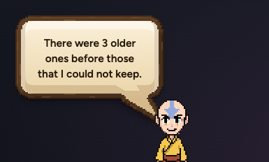
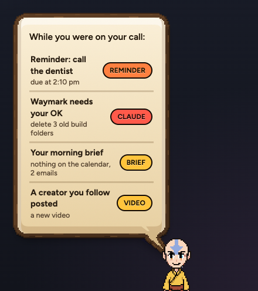
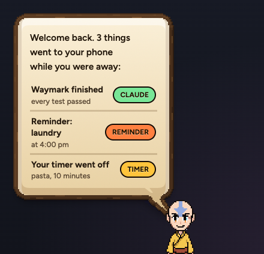

aTODAY

Up to eight bubbles, one every 6 seconds, each replacing the last. Then this line about the ones it dropped.
When you're busy, on a call, in Claude or away, Aang holds what he wanted to say. This is how it comes out after.
The real bubble and its own list rows, drawn by the app. The words in the rows are examples.

Up to eight bubbles, one every 6 seconds, each replacing the last. Then this line about the ones it dropped.

Everything that waited, one row each. What you set yourself and what Claude needs come first. Tap a row to open it. Anything too old is left out, and a Claude question you already answered is never shown.
One or two held things still come out as they are, as normal bubbles. The list is for three or more.

Once, the first time you touch the Mac after brb or 5 minutes away. Only what went to your phone. Nothing is sent again. Tap a row to see it in Look back. Nothing went out? Then he says nothing.